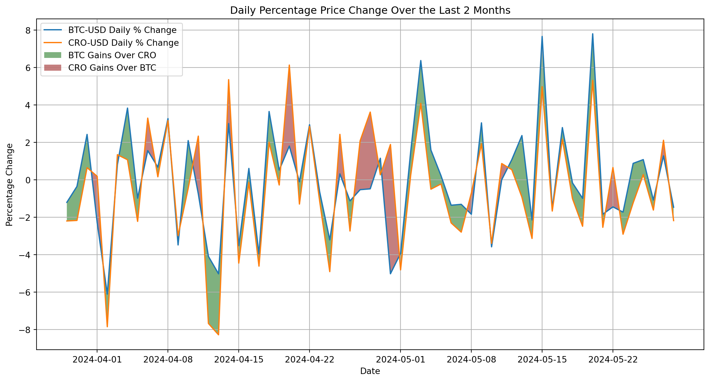
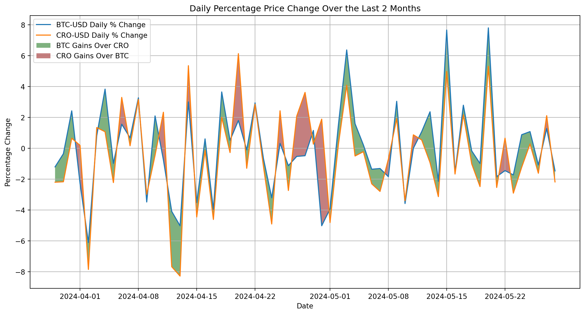
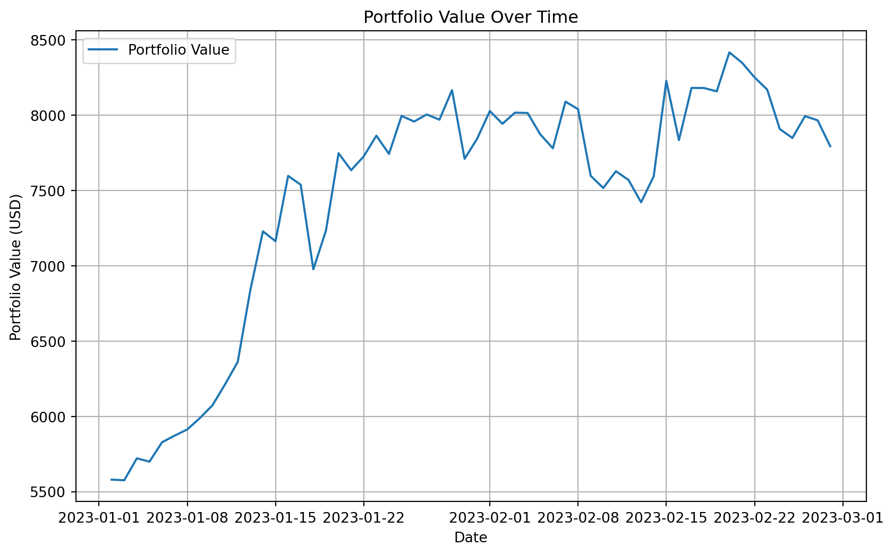
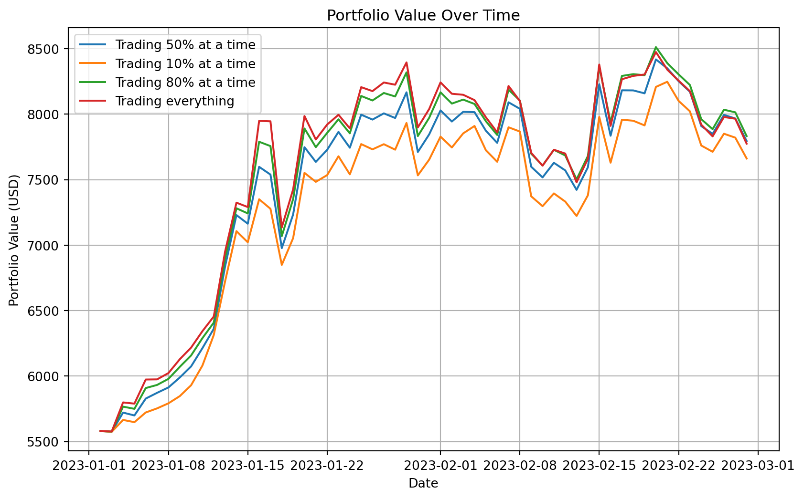
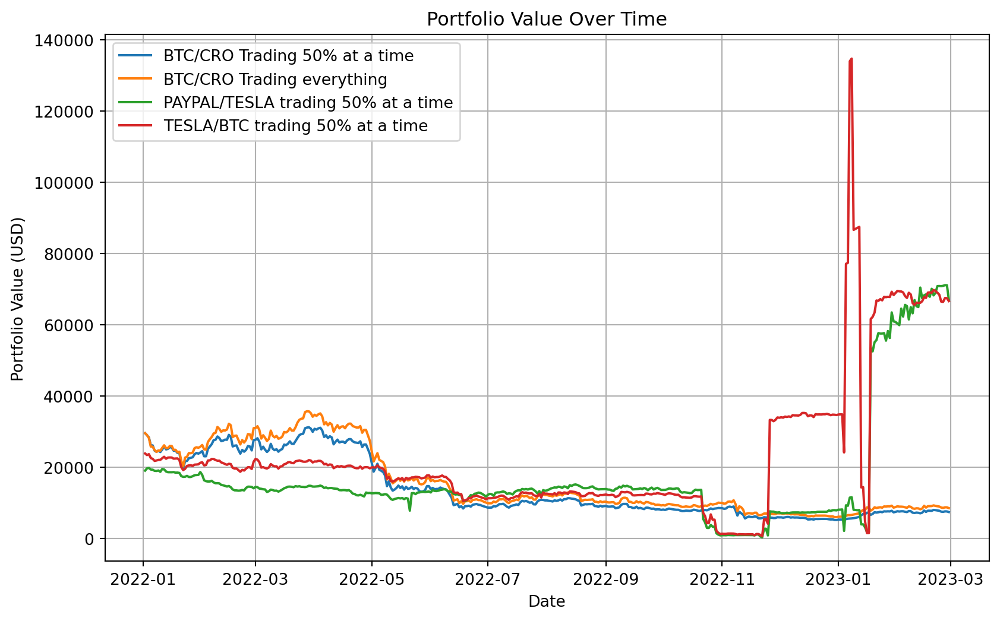
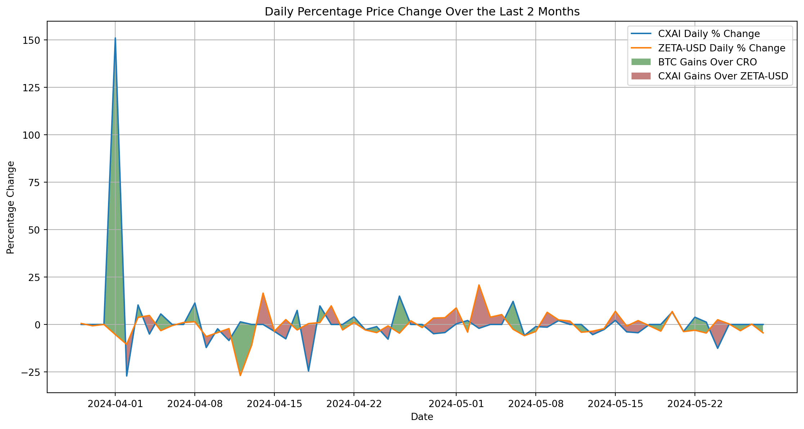

%run scripts/daily_change.py[ 0%% ][*********************100%%**********************] 2 of 2 completed
This notebook covers my attempt at putting together Prompt engineering, Data Science & cryptocurrency algorithmic trading to learn about optimal trading strategies
The gains of a potential speculative strategy are studied by plotting 2 pairs
BTC/USDCRO/USDIt’s a simple “buy low and sell high” trading strategy only using these 2 instruments. I visualise what my potential margins are by plotting the % price change of the two on the same timeseries whilst highlighting filling only the areas where one offsets against the other. In layman terms: the coloured areas are the moments where we can make money
%run scripts/daily_change.py[ 0%% ][*********************100%%**********************] 2 of 2 completed
The visualisation shows me that there’s room for margins, however. How will this behave in the wild?
I create a simple strategy with some rules:
%run scripts/basic_speculation.py[ 0%% ][*********************100%%**********************] 2 of 2 completed
Now that a foundation is set, I can draw N strategies on the canvas to measure how different approaches increase my portfolio value. A proposed problem for ML to solve would be to:
🌟 The outcome is to have the highest portfolio value which makes it very simple
%run scripts/multi_strategy_speculation.py[ 0%% ][*********************100%%**********************] 2 of 2 completed
BTC & CRO aren’t the only 2 instruments on the market. What if we grabbed another pair? I went for TSLA and PYPL
We can also mix and match
%run scripts/multi_instrument_multi_strategy.py[ 0%% ][*********************100%%**********************] 2 of 2 completed
[ 0%% ][*********************100%%**********************] 2 of 2 completed
[ 0%% ][*********************100%%**********************] 2 of 2 completed
A successful gain occurs when we “flip” twice and the price variation was always on our side.
Using historical data we can look at every single possible combination of financial instruments that over the last 1 year yield the maximum gains
We can then rank them and come up with a top 3 or 5. The algorithm to find this pair is very simple
I’ll come up with the top pairs of instruments to trade. The script can be found here. It must be run on the background due to its data size
scripts/top_pairs_to_trade.pyimport pandas as pd
# Load CSV file into DataFrame
df = pd.read_csv('data/selected_pairs.csv')
df| pair | score | |
|---|---|---|
| 0 | AISP / AULT | 2047.352423 |
| 1 | AULT / AISP | 2047.352423 |
| 2 | WTO / SBFM | 1995.649214 |
| 3 | FET-USD / AXL17799-USD | 1323.654462 |
| 4 | AXL17799-USD / FET-USD | 1323.654462 |
| ... | ... | ... |
| 439 | JTAIZ / GCTS | 4489.530701 |
| 440 | JAGX / JTAIZ | 4426.418104 |
| 441 | CFG-USD / FTT-USD | 1721.783582 |
| 442 | FTT-USD / CFG-USD | 1721.783582 |
| 443 | GRI / FTT-USD | 1609.159168 |
444 rows × 2 columns
We now have a list with ~450 entries of stock pairs.
The score is the absolute value of each days percentual price change aggregation difference between the 2. This way we can see who has the most gains. Let’s try to see how a pair of these fairs on my previous simulation
Here we trade CXAI and ZETA-USD
%run scripts/daily_change_top.py[ 0%% ][*********************100%%**********************] 2 of 2 completed
/Users/xyzxyz/dev/sergei_moneysevich/scripts/daily_change_top.py:12: FutureWarning:
The default fill_method='pad' in DataFrame.pct_change is deprecated and will be removed in a future version. Either fill in any non-leading NA values prior to calling pct_change or specify 'fill_method=None' to not fill NA values.

It looks like trading shitcoins is the best way to speculate into being rich.
Obviously this is a very young study so more adaptations need to be made.
bingo! Looks like the money doubles when traded over the last 2 months
%run scripts/top_multi_strategy_speculation.py[ 0%% ][*********************100%%**********************] 2 of 2 completed